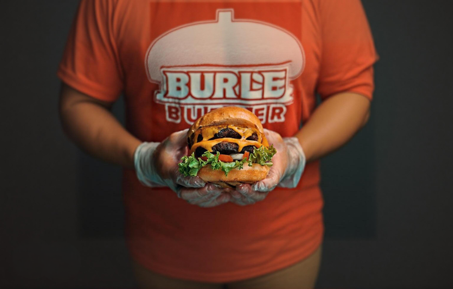

Schmackhafte Croissants können auch zu Hause sehr
einfach
gebacken werden. Mit ca. 30 Minuten Aufwand kannst du ein wundervolles Frühstück zaubern.
Lust auf was Neues?
Croquetas de Jamon

Burger
Carbonara
Wok
Pfanne vs. Wok - Was ist besser?
Die Entscheidung zwischen Pfanne und Wok hängt von deinen Kochgewohnheiten ab.
Die Pfanne: Ein Allrounder für den Alltag, ideal zum Braten, Schmoren oder Anbraten. Mit flachem
Boden und hohen Rändern ist sie perfekt für Steaks, Pfannkuchen oder Gemüse. Praktisch und einfach
zu handhaben.
Der Wok: Perfekt für asiatische Gerichte und schnelles Garen bei hohen Temperaturen. Seine runde
Form eignet sich gut für Stir-Fry oder gebratene Nudeln, benötigt aber oft einen Gasherd für
optimale Hitze.
Fazit: Die Pfanne ist vielseitig und alltagstauglich, der Wok ideal für asiatische Küche. Am besten
hast du beides!